3. Physics¶
3.1. Free Gas Scattering Kinematics¶
When a neutron scatters off of a nucleus, many times it is assumed that the target nucleus is at rest. However, if the material is at a temperature greater than 0 K, it will have motion associated with the thermal vibration. Thus, the velocity of the neutrno relative to the target nucleus is in general not the same as the velocity of the neutron entering the collision.
The affect of the thermal motion on the interaction probability can be written as
(1)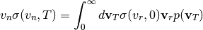
One assumption we can make here is that the velocity distribution for the thermal motion is isotropic, i.e.
(2)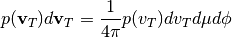
With this assumption, we can now rewrite equation (1) as
(3)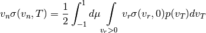
To change the outer variable of integration from  to 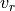, we
can establish a relation between these variables based on the law of cosines.
to 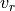, we
can establish a relation between these variables based on the law of cosines.
(4)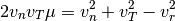
The probability distribution for the magnitude of the velocity of the target nucleus and the angle between the neutron and target velocity is
(5)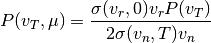
It is normally assumed that 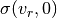 is constant over the range of relative velocities of interest. This is a good assumption for almost all cases since the elastic scattering cross section varies slowly with velocity for light nuclei, and for heavy nuclei where large variations can occur due to resonance scattering, the moderating effect is rather small. Nonetheless, this assumption can cause incorrect answers in systems with U-238 where the low-lying resonances can cause a significant amount of upscatter that would be ignored by this assumption.
With this (sometimes incorrect) assumption, we see that the probability distribution is proportional to
(6)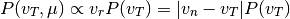
We can divide this probability distribution into two parts as such:
(7)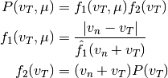
In general, any probability distribution function of the form  with
with  bounded can be sampled by sampling
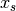 from the distribution
bounded can be sampled by sampling
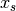 from the distribution
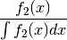
and accepting it with probability

It is normally assumed that the velocity distribution of the target nucleus assumes a Maxwellian distribution in velocity.